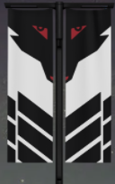

 TBI Clan
TBI which stands for "Team Bring It" is a Destiny 2 in-game clan focused on Endgame 6-man content.
Focusing on 6-man, endgame content within Destiny 2 - TBI are a group of close-knit friends playing at the highest level.
Destiny 1 was released by Bungie Game Studios in 2014. It is a First person fantasy shooter focused on group and open world gameplay.
this was followed up by Destiny 2 in 2017. it is a direct follow-up to the first game.
The game consists of 3 playable 'classes'. These are; Warlock, Hunter and Titan.